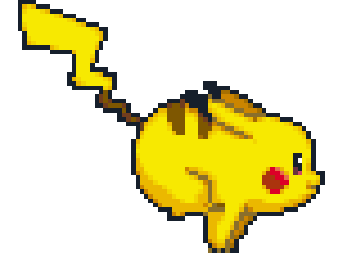

-So what is a Pomodoro?
The Pomodoro Technique is a time management technique created by Francesco Cirillo
for a more productive way to work and study. It comprises of the following basic steps:
- Decide a task;
- Set the Pomodoro (timer) to 25 minutes;
- Work on the task without interruptions until the timer expires;
- Take a Short Break (5 minutes);
- Every four "pomodoros", take a Long Break (10 minutes).
-And what is PokePomodoro?
It's an easy to use, flexible Pomodoro Technique timer with a Pokemon theme. It was inspired by an Android app called Forest
and it uses javascript and HTML5 features to work. While you are doing your task, the little pokemon trainer is looking for a new battle,
so everytime you finish a pomodoro you will catch a new Pokemon. Can you catch em' all?
